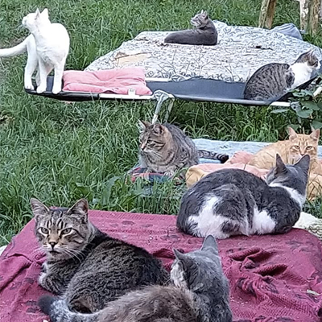
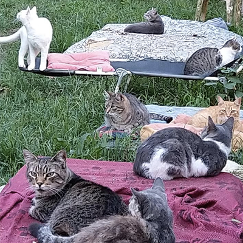

Siamo Iolanda e Maurizio. Abbiamo iniziato questa avventura più di trent' anni fa, nata dal nostro amore per i gatti e per tutti gli animali. Viviamo a Tribano, in una casa non lontana dal rifugio in cui portiamo i gattini piccoli appena trovati, o i gatti ammalati che hanno bisogno di ancora più attenzione. Ritrovati nei cassonetti, abbandonati in strada, nelle discariche, nei fossi, oppure sottratti a “persone” che li maltrattano: al rifugio sono tutti ben accetti!
 

Quando ci siamo trasferiti a Tribano, abbiamo realizzato che c’erano molti animali, soprattutto gatti, che avevano bisogno di cibo, cure e un posto dove stare. All’inizio il comune ci aveva concesso, in comodato, una struttura per tenere i cinquanta gatti delle varie colonie nate in zona. Lì abbiamo iniziato anche a fare molte attività didattiche ed educative, oltre ai banchetti che ogni sabato organizzavamo al mercato di Rovigo. Nel marzo 2003 è poi iniziata la costruzione del rifugio vero e proprio. Non senza difficoltà, superando problemi burocratici e politici di ogni tipo che impedivano la costruzione, abbiamo recuperato un terreno di famiglia e, aiutati da parenti, amici e persone gentili, abbiamo raccolto materiali e soldi per costruire il gattile.
Dopo 18 anni di attività, il rifugio ospita oltre 200 gatti tra adulti e cuccioli, oltre a due capre e un paio di tacchini e galline. Il terreno che li ospita è di circa 2000 mq e suddiviso in 15 recinti grandi e piccoli. Questo per garantire ad ogni gatto lo spazio più ideale: un luogo tranquillo per rimettersi se hanno malattie, o un'area dove giocare ed esplorare in libertà se sono più selvatici di altri. Ogni recinto ha almeno una casetta, dove i mici possono ripararsi da pioggia e freddo, o dove possono trovare un po' di ombra nelle giornate più calde. In inverno, quando le temperature si fanno più rigide, aggiungiamo anche le lampade riscaldanti per tenerli al caldo. Sono testati per il FIV e il FeLV, sverminati, vaccinati, sterilizzati e, prima di entrare nel cortile con gli altri gatti, passano un breve periodo di quarantena in un recinto a parte, per evitare la trasmissione di eventuali malattie. Organizziamo giornate aperte in rifugio per farci conoscere e banchetti al mercato di Tribano per raccogliere fondi tramite la vendita di vari articoli. L’intero ricavato viene usato per migliorare il rifugio e renderlo ancora più accogliente per i nostri ospiti pelosi.


Via Torre 5, Tribano (PD) Cellulare: 3496148848 Mail:info@uepa.it